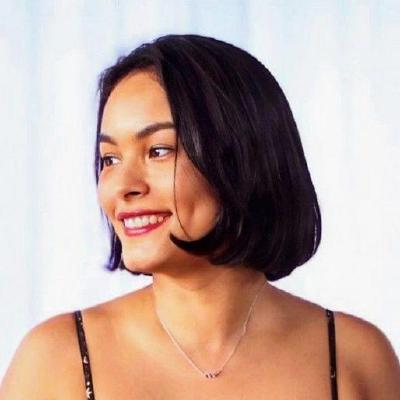

Papel pautado, cor com grão e um traço à mão
O cartão colorido ganha textura de grão, como impressão. Atrás dele, um cartão de papel pautado. Um rabisco orquídea passa pela borda e uma estrela violeta fica no canto.
No mouse, as camadas se alinham, o rabisco se redesenha e a estrela gira.
RecomendadoPontos de retícula, legenda de revista e um selo girando
Uma retícula de pontos violeta sai do canto, como em impressão gráfica. Na lateral, uma legenda vertical no estilo "Fig. 01". No canto de baixo, um selo redondo com o E do favicon e um texto girando.
É a mais "editorial técnica": parece figura de artigo, o que conversa com as suas publicações.
Brilho difuso, moldura de foto e fita adesiva
Uma luz violeta e orquídea se move devagar atrás das camadas. A foto ganha moldura, como uma foto revelada, presa por uma fita translúcida. Um círculo à mão marca o canto.
É a mais calorosa e pessoal. No tema claro o brilho fica mais discreto.